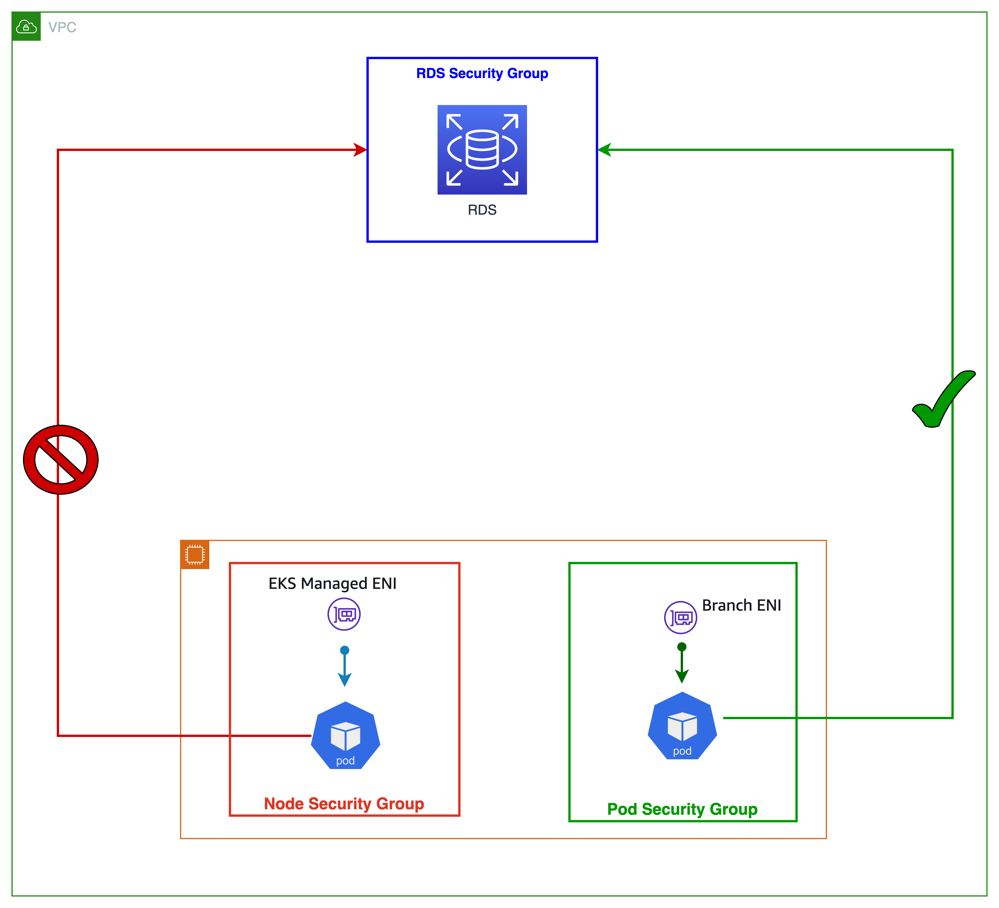

파드용 보안 그룹 (Security Group for Pod, SGP)¶
AWS 보안 그룹은 인바운드 및 아웃바운드 트래픽을 제어하기 위해 EC2 인스턴스에 대한 가상 방화벽의 역할을 수행합니다. 기본적으로 Amazon VPC CNI는 노드의 ENI와 연결된 보안 그룹을 사용합니다. 따라서 모든 파드는 기본적으로 파드가 동작하는 노드와 동일한 보안 그룹을 공유하여 이용합니다.
아래 그림에서 볼 수 있듯이, 워커 노드에서 동작하는 모든 애플리케이션 파드는 RDS 데이터베이스 서비스에 액세스할 수 있습니다. (RDS 인바운드가 노드의 보안 그룹을 허용한다는 가정하에). 보안 그룹은 노드에서 실행되는 모든 파드에 적용되기 때문에 큰 그룹 단위로 보안 규칙이 적용됩니다. 파드용 보안 그룹 기능을 이용하면 각 Pod별로 보안 규칙을 설정할 수 있으며, 이는 세세한 보안 전략을 세울수 있도록 도와줍니다.
 파드용 보안 그룹을 사용하면 공유 컴퓨팅 리소스에서 다양한 네트워크 보안 요구 사항을 가진 애플리케이션을 실행하여 컴퓨팅 효율성을 개선할 수 있습니다. EC2 보안 그룹과 함께 파드와 파드 사이 또는 파드에서 외부 AWS 서비스와 같은 여러 유형의 보안 규칙을 한 곳에서 정의하고 Kubernetes 네이티브 API를 사용하여 워크로드에 적용할 수 있습니다. 아래의 그림은 파드 수준에서 적용된 보안 그룹을 나타내고 있으며, 이런 보안 그룹이 애플리케이션 배포 및 노드 아키텍처를 간소화하는 방법을 보여줍니다. 이제 파드에서 Amazon RDS 데이터베이스에 액세스할 수 있습니다.
파드용 보안 그룹을 사용하면 공유 컴퓨팅 리소스에서 다양한 네트워크 보안 요구 사항을 가진 애플리케이션을 실행하여 컴퓨팅 효율성을 개선할 수 있습니다. EC2 보안 그룹과 함께 파드와 파드 사이 또는 파드에서 외부 AWS 서비스와 같은 여러 유형의 보안 규칙을 한 곳에서 정의하고 Kubernetes 네이티브 API를 사용하여 워크로드에 적용할 수 있습니다. 아래의 그림은 파드 수준에서 적용된 보안 그룹을 나타내고 있으며, 이런 보안 그룹이 애플리케이션 배포 및 노드 아키텍처를 간소화하는 방법을 보여줍니다. 이제 파드에서 Amazon RDS 데이터베이스에 액세스할 수 있습니다.

VPC CNI에 대해 ENABLE_POD_ENI=true로 설정하여 파드에 대한 보안 그룹을 활성화할 수 있습니다. 활성화되면 EKS의 컨트롤 플레인에서 실행되는 "VPC 리소스 컨트롤러"가 "aws-k8s-trunk-eni"라는 트렁크 인터페이스를 생성하여 노드에 연결합니다. 트렁크 인터페이스는 인스턴스에 연결된 표준 네트워크 인터페이스 역할을 합니다. 트렁크 인터페이스를 관리하려면 Amazon EKS 클러스터와 함께 제공되는 클러스터 역할에 'AmazonEKSVPCResourceController' 관리형 정책을 추가해야 합니다.
또한 컨트롤러는 "aws-k8s-branch-eni"라는 브랜치 인터페이스를 생성하여 트렁크 인터페이스와 연결합니다. 파드는 SecurityGroupPolicy 커스텀 리소스를 사용하여 보안 그룹을 할당받고 브랜치 인터페이스와 연결됩니다. 보안 그룹은 네트워크 인터페이스 단위로 지정되므로, 이제 이런 추가 네트워크 인터페이스에서 특정 보안 그룹을 필요로 하는 파드를 스케줄링할 수 있습니다. 배포 사전 요구 사항을 포함하여 파드용 보안 그룹에 대한 EKS 사용자 가이드 섹션에서 좀더 자세한 내용들을 확인할 수 있습니다.

분기 인터페이스 용량은 보조 IP 주소에 대한 기존 인스턴스 유형 제한에 추가됩니다. 보안 그룹을 사용하는 파드는 max-pods 공식에서 고려되지 않으며 파드에 보안 그룹을 사용하는 경우 max-pods 값을 높이는 것을 고려하거나 노드가 실제로 지원할 수 있는 것보다 적은 수의 파드를 실행해도 괜찮습니다.
m5.large에는 최대 9개의 분기 네트워크 인터페이스가 있을 수 있으며 표준 네트워크 인터페이스에 최대 27개의 보조 IP 주소가 할당될 수 있습니다. 아래 예에 표시된 것처럼 m5.large의 기본 max-pods는 29이며 EKS는 보안 그룹을 사용하는 Pod를 최대 Pod 수로 계산합니다. 노드의 max-pods를 변경하는 방법에 대한 지침은 EKS 사용자 가이드를 참조하십시오.
파드용 보안 그룹을 사용자 지정 네트워킹과 함께 사용하는 경우, ENIConfig에 지정된 보안 그룹 대신 파드용 보안 그룹에 정의된 보안 그룹이 사용됩니다. 따라서 사용자 지정 네트워킹이 활성화되면 파드별 보안 그룹을 사용하면서 보안 그룹 순서를 신중하게 살펴봐야 합니다.
권장 사항¶
활성 프로브를 위한 TCP Early Demux 기능 비활성화¶
활성 또는 준비 상태 프로브를 사용하는 경우, kubelet이 TCP를 통해 브랜치 네트워크 인터페이스의 파드에 연결할 수 있도록 TCP Early Dmux 기능을 비활성화 해야 합니다. 이는 엄격 모드에서만 필요합니다. 이 작업을 수행하려면 다음 명령을 실행합니다.
초기화 컨테이너 섹션에서 DISABLE_TCP_EARLY_DEMUX의 값을 true로 변경합니다.
Pod용 보안 그룹을 사용하여 기존 AWS 구성을 활용하십시오.¶
보안 그룹을 사용하면 RDS 데이터베이스 또는 EC2 인스턴스와 같은 VPC 리소스에 대한 네트워크 액세스를 더 쉽게 제한할 수 있습니다. 파드용 보안 그룹의 분명한 이점 중 하나는 기존 AWS 보안 그룹 리소스를 재사용할 수 있다는 것입니다. 보안 그룹을 네트워크 방화벽으로 사용하여 AWS 서비스에 대한 액세스를 제한하는 경우, 브랜치 ENI를 사용하여 파드에 보안 그룹을 적용하는 것이 좋습니다. EC2 인스턴스에서 EKS로 앱을 전송하고 보안 그룹을 통해 다른 AWS 서비스에 대한 액세스를 제한하는 경우 파드용 보안 그룹을 사용하는 것을 고려해 보십시오.
파드용 보안 그룹 Enforcing 모드 구성¶
Amazon VPC CNI 플러그인 버전 1.11에는 POD_SECURITY_GROUP_ENFORCING_MODE("enforcing 모드")라는 새로운 설정이 추가되었습니다. 적용 모드는 파드에 적용되는 보안 그룹과 소스 NAT 활성화 여부를 모두 제어합니다. 적용 모드를 엄격 또는 표준으로 지정할 수 있습니다. 엄격이 기본값이며 ENABLE_POD_ENI가 true로 설정된 VPC CNI의 이전 동작을 반영합니다.
Strict 모드에서는 분기 ENI 보안 그룹만 적용됩니다. 소스 NAT도 비활성화됩니다.
Standard 모드에서는 기본 ENI 및 분기 ENI(파드와 연결됨)와 연결된 보안 그룹이 적용됩니다. 네트워크 트래픽은 두 보안 그룹을 모두 준수해야 합니다.
Warning
모든 모드 변경은 새로 출시된 파드에만 영향을 미칩니다. 기존 파드는 파드가 생성될 때 구성된 모드를 사용한다. 고객은 트래픽 동작을 변경하려는 경우 보안 그룹과 함께 기존 파드를 재활용해야 합니다.
Enforcing 모드: 파드 및 노드 트래픽을 격리하기 위해 Strict 모드를 사용¶
기본적으로 Pod의 보안 그룹은 “Strict 모드”로 설정됩니다. 파드 트래픽을 나머지 노드 트래픽과 완전히 분리해야 하는 경우 이 설정을 사용한다. Strict 모드에서는 소스 NAT가 꺼져 브랜치 ENI 아웃바운드 보안 그룹을 사용할 수 있습니다.
Warning
모든 모드 변경은 새로 실행된 파드에만 영향을 미칩니다. 기존 파드는 파드가 생성될 때 구성된 모드를 사용합니다. 고객이 트래픽 동작을 변경하려면 보안 그룹이 포함된 기존 파드를 재활용해야 합니다.
Enforcing 모드: 다음 상황에서는 Standard 모드를 사용¶
파드의 컨테이너에 표시되는 클라이언트 소스 IP
클라이언트 소스 IP를 파드의 컨테이너에 표시되도록 유지해야 하는 경우 POD_SECURITY_GROUP_ENFORCING_MODE를 standard으로 설정하는 것이 좋습니다. Kubernetes 서비스는 클라이언트 소스 IP(기본 유형 클러스터) 보존을 지원하기 위해 externalTrafficPolicy=local을 지원합니다. 이제 표준 모드에서 externalTrafficPolicy가 Local로 설정된 인스턴스 대상을 사용하여 NodePort 및 LoadBalancer 유형의 Kubernetes 서비스를 실행할 수 있습니다. Local은 클라이언트 소스 IP를 유지하고 LoadBalancer 및 NodePort 유형 서비스에 대한 두 번째 홉을 방지합니다.
NodeLocal DNSCache 배포
파드에 보안 그룹을 사용하는 경우 NodeLocal DNSCache를 사용하는 파드를 지원하도록 표준 모드를 구성합니다. NodeLocal DNSCache는 클러스터 노드에서 DNS 캐싱 에이전트를 DaemonSet으로 실행하여 클러스터 DNS 성능을 향상시킵니다. 이렇게 하면 DNS QPS 요구 사항이 가장 높은 파드가 로컬 캐시가 있는 로컬 kube-dns/CoreDNS를 쿼리하는 데 도움이 되어 대기 시간이 향상됩니다.
NodeLocal DNSCache는 노드에 대한 모든 네트워크 트래픽이 VPC로 진입하므로 strict 모드에서는 지원되지 않습니다.
Kubernetes 네트워크 정책 지원
연결된 보안 그룹이 있는 파드에 네트워크 정책을 사용할 때는 표준 시행 모드를 사용하는 것이 좋습니다.
클러스터에 속하지 않은 AWS 서비스에 대한 네트워크 수준 액세스를 제한하려면 파드용 보안 그룹을 활용하는 것이 좋습니다. 클러스터 내부 파드 간의 네트워크 트래픽(종종 East/West 트래픽이라고도 함)을 제한하려면 네트워크 정책을 고려하세요.
파드당 보안 그룹과의 비호환성 식별¶
Windows 기반 및 비 Nitro 인스턴스는 파드에 대한 보안 그룹을 지원하지 않습니다. 파드에서 보안 그룹을 활용하려면 인스턴스에 isTrunkingEnabled 태그를 지정해야 합니다. 파드가 VPC 내부 또는 외부의 AWS 서비스에 의존하지 않는 경우 네트워크 정책을 사용하여 보안 그룹이 아닌 파드 간의 액세스를 관리합니다.
파드당 보안 그룹을 사용하여 AWS 서비스에 대한 트래픽을 효율적으로 제어¶
EKS 클러스터 내에서 실행되는 애플리케이션이 VPC 내의 다른 리소스와 통신해야 하는 경우. RDS 데이터베이스를 구축한 다음 파드에 SG를 사용하는 것을 권장 드립니다. CIDR 또는 DNS 이름을 지정할 수 있는 정책 엔진이 있지만 VPC 내에 엔드포인트가 있는 AWS 서비스와 통신할 때는 덜 최적의 선택입니다.
이와 대조적으로 Kubernetes 네트워크 정책은 클러스터 내부 및 외부 모두에서 수신 및 송신 트래픽을 제어하기 위한 메커니즘을 제공합니다. 애플리케이션이 다른 AWS 서비스에 대한 종속성이 제한적인 경우 Kubernetes 네트워크 정책을 고려해야 합니다. SG와 같은 AWS 기본 의미 체계와 반대로 AWS 서비스에 대한 액세스를 제한하기 위해 CIDR 범위를 기반으로 송신 규칙을 지정하는 네트워크 정책을 구성할 수 있습니다. Kubernetes 네트워크 정책을 사용하여 파드 간(종종 East/West 트래픽이라고도 함) 및 파드와 외부 서비스 간의 네트워크 트래픽을 제어할 수 있습니다. Kubernetes 네트워크 정책은 OSI 레벨 3과 4에서 구현됩니다.
Amazon EKS를 사용하면 Calico 및 Cilium. 기본적으로 네트워크 정책 엔진은 설치되지 않습니다. 설정 방법에 대한 지침은 해당 설치 가이드를 확인하세요. 네트워크 정책 사용 방법에 대한 자세한 내용은 EKS 보안 모범 사례를 참조하세요. DNS 호스트 이름 기능은 엔터프라이즈 버전의 네트워크 정책 엔진에서 사용할 수 있으며, 이는 Kubernetes 서비스/파드와 AWS 외부에서 실행되는 리소스 간의 트래픽을 제어하는 데 유용할 수 있습니다. 또한 기본적으로 보안 그룹을 지원하지 않는 AWS 서비스에 대한 DNS 호스트 이름 지원을 고려할 수 있습니다.
AWS Loadbalancer Controller를 사용하도록 단일 보안 그룹에 태그 지정¶
많은 보안 그룹이 파드에 할당된 경우 Amazon EKS는 공유 또는 소유된 kubernetes.io/cluster/$name으로 단일 보안 그룹에 태그를 지정할 것을 권장합니다. 태그를 사용하면 AWS Loadbalancer Controller가 보안 그룹의 규칙을 업데이트하여 트래픽을 파드로 라우팅할 수 있습니다. 파드에 하나의 보안 그룹만 제공되는 경우 태그 할당은 선택 사항입니다. 보안 그룹에 설정된 권한은 추가되므로 로드밸런서 컨트롤러가 규칙을 찾고 조정하려면 단일 보안 그룹에 태그를 지정하는 것으로 충분합니다. 또한 보안 그룹에서 정의한 기본 할당량을 준수하는 데 도움이 됩니다.
아웃바운드 트래픽에 대한 NAT 구성¶
소스 NAT는 보안 그룹이 할당된 파드의 아웃바운드 트래픽에 대해 비활성화됩니다. 인터넷 액세스가 필요한 보안 그룹을 사용하는 파드의 경우 NAT 게이트웨이 또는 인스턴스로 구성된 프라이빗 서브넷에서 워커 노드를 시작하고 CNI에서 외부 SNAT를 활성화합니다.
보안 그룹이 있는 파드를 프라이빗 서브넷에 배포¶
보안 그룹이 할당된 파드는 프라이빗 서브넷에 배포된 노드에서 실행되어야 합니다. 단 퍼블릭 서브넷에 배포된 보안 그룹이 할당된 파드는 인터넷에 액세스할 수 없습니다.
파드 스펙에서 terminationGracePeriodSeconds 부분 확인¶
파드 사양 파일에서 'terminationGracePeriodSeconds'가 0이 아닌지 확인하세요. (기본값 30초) 이는 Amazon VPC CNI가 워커 노드에서 파드 네트워크를 삭제하는 데 필수적입니다. 0으로 설정하면 CNI 플러그인이 호스트에서 파드 네트워크를 제거하지 않으며 분기 ENI가 효과적으로 정리되지 않습니다.
Fargate를 이용하는 파드용 보안 그룹 사용¶
Fargate에서 실행되는 파드의 보안 그룹은 EC2 워커 노드에서 실행되는 파드와 매우 유사하게 작동한다. 예를 들어 Fargate 파드에 연결하는 보안 그룹 정책에서 보안 그룹을 참조하기 전에 먼저 보안 그룹을 생성해야 합니다.기본적으로 보안 그룹 정책을 Fargate 파드에 명시적으로 할당하지 않으면 클러스터 보안 그룹이 모든 Fargate 파드에 할당됩니다. 단순화를 위해 Fagate Pod의 SecurityGroupPolicy에 클러스터 보안 그룹을 추가할 수도 있습니다. 그렇지 않으면 보안 그룹에 최소 보안 그룹 규칙을 추가해야 합니다. 설명 클러스터 API를 사용하여 클러스터 보안 그룹을 찾을 수 있습니다.
aws eks describe-cluster --name CLUSTER_NAME --query 'cluster.resourcesVpcConfig.clusterSecurityGroupId'
cat >my-fargate-sg-policy.yaml <<EOF
apiVersion: vpcresources.k8s.aws/v1beta1
kind: SecurityGroupPolicy
metadata:
name: my-fargate-sg-policy
namespace: my-fargate-namespace
spec:
podSelector:
matchLabels:
role: my-fargate-role
securityGroups:
groupIds:
- cluster_security_group_id
- my_fargate_pod_security_group_id
EOF
최소 보안 그룹 규칙은 여기에 나와 있습니다. 이런 규칙을 통해 Fargate 파드는 kube-apiserver, kubelet, CoreDNS와 같은 클러스터 내 서비스와 통신할 수 있다. 또한 Fargate 파드와의 인바운드 및 아웃바운드 연결을 허용하는 규칙을 추가해야 합니다. 이렇게 하면 파드가 VPC의 다른 파드나 리소스와 통신할 수 있게 된다. 또한 Fargate가 Amazon ECR 또는 DockerHub와 같은 다른 컨테이너 레지스트리에서 컨테이너 이미지를 가져오도록 하는 규칙을 포함해야 합니다. 자세한 내용은 AWS 일반 참조의 AWS IP 주소 범위를 참조하십시오.
아래 명령을 사용하여 Fargate Pod에 적용된 보안 그룹을 찾을 수 있습니다.
위 명령의 ENI ID를 적어 둡니다.
aws ec2 describe-network-interfaces --network-interface-ids ENI_ID --query 'NetworkInterfaces[*].Groups[*]'
새 보안 그룹을 적용하려면 기존 Fargate 파드를 삭제하고 다시 만들어야 합니다. 예를 들어 다음 명령은 example-app 배포를 시작합니다. 특정 파드를 업데이트하려면 아래 명령어에서 네임스페이스와 디플로이먼트 이름을 변경할 수 있습니다.